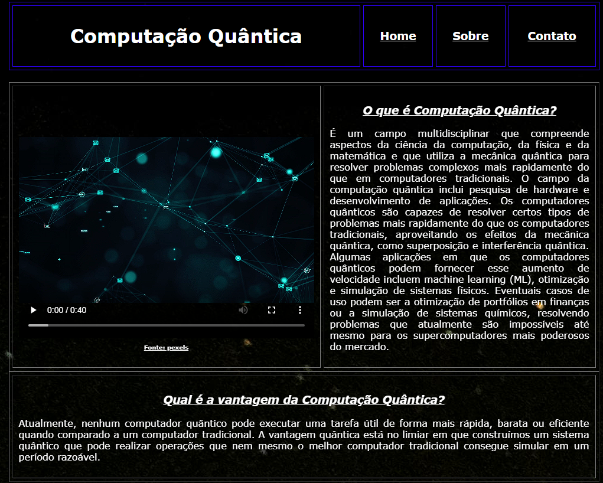
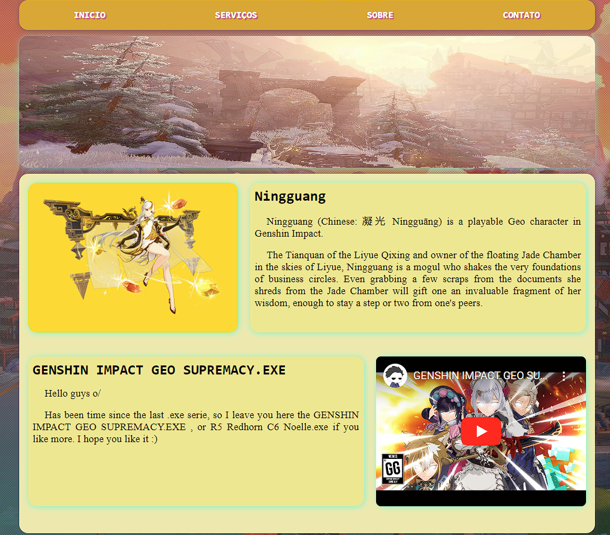

Projeto 1 - Página WEB - HTML/HTML5
No desenvolvimento da atividade de criação de uma página web utilizando HTML/HTML5, o foco foi construir uma estrutura simples e organizada, que permite exibir o conteúdo de maneira clara. Utilizei tags básicas, como header, nav, section, e footer, para estruturar o site.
Projeto 2 - SITE CSS
Na atividade de desenvolvimento de um site utilizando CSS, o foco principal foi a estilização do conteúdo previamente estruturado em HTML. O CSS (Cascading Style Sheets) permite definir cores, tamanhos de fontes, espaçamentos e posicionamentos dos elementos, deixando a página mais atraente e organizada visualmente. A aplicação de estilos foi feita de forma a tornar o site responsivo, garantindo uma boa experiência em diferentes dispositivos, como computadores e celulares. Além disso, técnicas básicas de design foram utilizadas para melhorar a estética e a usabilidade da página.
Projeto 3 - Bootstrap - Front End - LandPage
Este projeto é uma Landing Page desenvolvida utilizando o Bootstrap, com o objetivo de criar uma página inicial atraente e funcional. Bootstrap, como um dos frameworks mais populares para desenvolvimento front-end, facilita a criação de sites responsivos e adaptáveis a diferentes dispositivos. Durante o desenvolvimento, foram utilizados componentes prontos, como menus de navegação, botões e cards, proporcionando uma estrutura organizada e intuitiva. O foco foi garantir uma experiência agradável ao usuário, com uma interface simples e profissional.
Mais Informações - Projeto 1 - Página WEB - HTML/HTML5
Além da estruturação do conteúdo, o HTML5 oferece suporte a diversas funcionalidades modernas que melhoram a experiência do usuário, como incorporação de vídeos e formulários otimizados. O projeto desenvolvido é simples, mas serve como base para páginas mais complexas no futuro.
Para acessar a página final, clique no link abaixo:
Mais Informações - Projeto 2 - SITE CSS
Com o uso de CSS, é possível transformar uma página HTML simples em algo visualmente mais interessante. Através de seletores e propriedades CSS, ajustei os detalhes da página, como cores, bordas, espaçamento e alinhamento. Também utilizei flexbox e grid para melhorar o layout, deixando-o mais flexível e adaptável.
Para visualizar o resultado final dessa atividade, você pode acessar o site pelo link abaixo:
Mais Informações - Projeto 3 - Bootstrap - Front End - LandPage
Este projeto é o site que você está acessando agora! Utilizando o Bootstrap, foi possível construir uma Landing Page moderna, que se adapta automaticamente a diferentes tamanhos de tela, tanto para desktops quanto para dispositivos móveis. O framework ajudou a organizar o layout de forma eficiente, incluindo botões de chamada para ação e uma navegação fluida, garantindo que o conteúdo seja apresentado de maneira clara e envolvente.